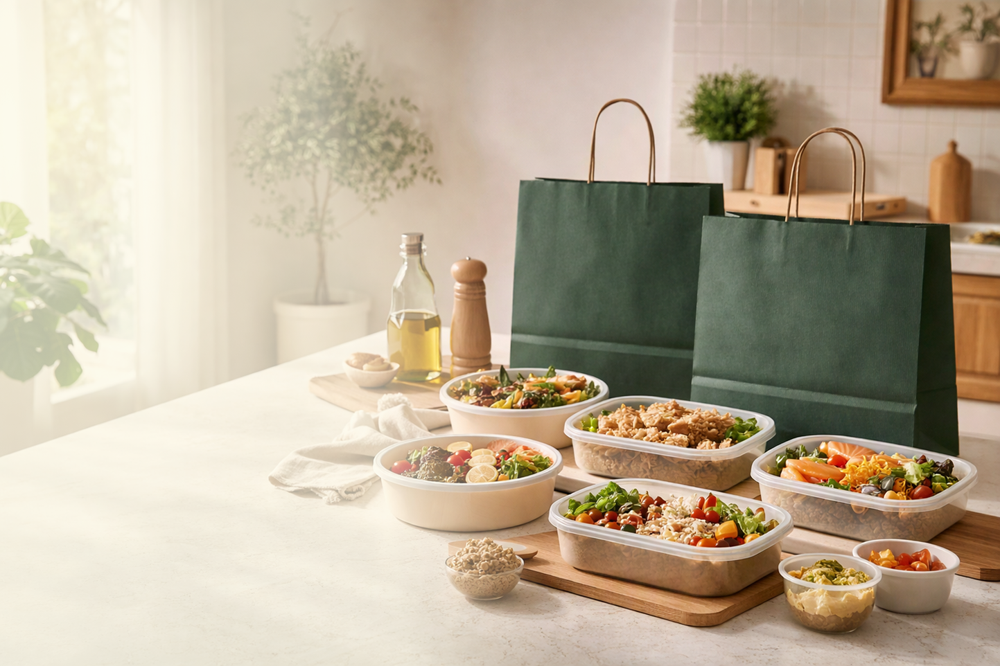
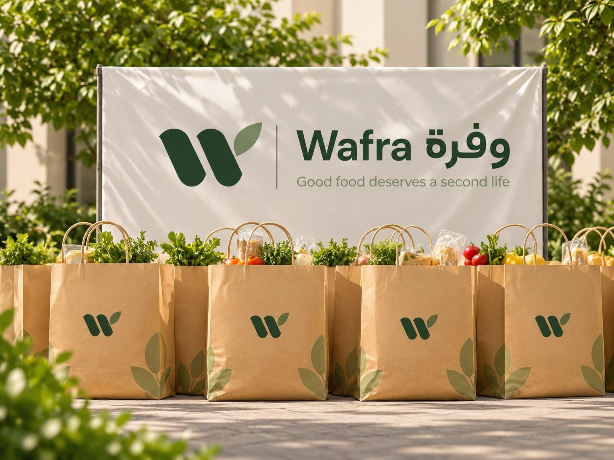

More Than Food. A Better Way to Make a Difference.
Wafra brings individuals, food businesses, and charitable organizations together to make good food more accessible, reduce food waste, and support communities through donations.
Who we are
More Than a Marketplace. A Connection with Purpose.
Wafra is a platform that connects individuals, food businesses, and charitable organizations through food purchasing and donation opportunities.
Customers can discover and order meals for themselves, while also having the opportunity to donate meals and support people in need.
Food businesses can showcase their products through Wafra, reach more customers, and become part of a platform that combines food commerce with a meaningful social purpose.
By bringing these experiences together, Wafra aims to make responsible food consumption and giving part of everyday life.

Our purpose
A Better Way to Make
Every Meal Matter.
Our Mission
To reduce food waste and make food donations more accessible by connecting food businesses, individuals, and charitable organizations.
Our Vision
To build a community where good food is valued, food waste is reduced, and responsible food consumption and giving become part of everyday life.
Our Goal
To create a sustainable platform that makes it easier for people to enjoy good food while giving businesses and individuals meaningful ways to contribute to society.
Our approach
Food, People & Purpose.
At Wafra, food is more than a product. It can bring people together, support communities, and create opportunities for positive change.
We believe that everyday food choices and larger collective initiatives can contribute to a more responsible food system.
By connecting food businesses, individuals, and charitable organizations, we aim to make every interaction an opportunity for greater impact.
Our impact
Making Sustainability Part of Everyday Choices.
Reducing food waste is at the heart of Wafra’s environmental purpose.
Through responsible food purchasing and food donations, Wafra aims to help good food reach people who need it instead of going to waste.
Beyond individual contributions, we want to create opportunities for businesses and larger organizations to participate in meaningful social responsibility initiatives.
From charitable food donations to coordinated community events, Wafra aims to make it easier for organizations to turn their intentions into meaningful action.

Partnerships
Together, We Make Food Matter.
We believe meaningful impact becomes stronger when businesses and organizations work together.
Wafra aims to become a connecting and coordinating partner for companies, brands, and organizations that want to participate in food donation initiatives and demonstrate their commitment to social responsibility.
Whether it is a large-scale food donation, a company event supporting charitable causes, or a collaborative community initiative, Wafra can help coordinate the connection between organizations, food providers, and charitable partners.

Corporate & Business Partners
Turn your social responsibility goals into meaningful food donation initiatives. Work with Wafra to coordinate donations and community-focused events.
Food Businesses
Showcase your products, reach more customers, and become part of a platform that connects food commerce with a greater purpose.
Charitable Organizations
Connect with food donation initiatives and opportunities to receive support through Wafra’s growing network.
Our targets
Our Goals for the First 6 Months
These are the milestones we are working toward during our first six months. They are targets, not results achieved so far.
Target
20
Business Partners
Build partnerships with 20 food businesses.
Target
5
Charity Partners
Collaborate with 5 charitable organizations.
Target
500
Registered Customers
Reach 500 registered customers.